Elindultunk többen, természetesen "Csõcselék" mellényben, hátha megint fel kell valamit gyújtani
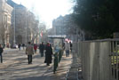
A 2-es villamos leállt, a trolik sem közlekedtek a térig. A Jászai Mari tér felõl közeledtünk.
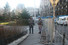
A legváltozatosabb öltözékû rendõrök fogadtak bennünket. Ezeknek a régi, szürke gyakorló jutott...
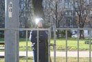
...ennek kék, sajnos jelvény már nem volt neki...
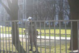
... ennek is szürke...
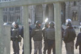
... ezeknek ahogy esett, úgy puffant...

... ennek pedig már jutott sisak se, de kapott helyette Kirasza mellényt, hadd cipelje.
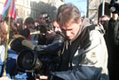
Jött a média

A Parlament közepe felé haladva egyre változatosabbá vált a látvány
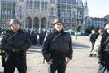
Ezt a tahót megkérdeztem, hol a jelvénye. "És neked az ész?!" - kiabált vissza kincstári szellemességgel. Elmondtam neki, milyen diplomám van, és milyen nyelvvizsgáim, de õ nem mondta meg, hogy neki milyen. De legalább szóba állt velem.

Rövidesen elõkerült egy hangosbeszélõ, és a kordon elé állított virágláda sarka szolgált átmeneti színpadként. Késõbb érkezett egy kisteherautó is, mobil hangosítócuccal és szónoki emelvénnyel.
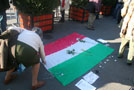
Volt ilyen is
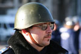
Ez (is) vigyázott ránk
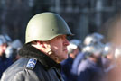
Meg ez is

Õk, együtt, sokan
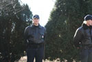
A nõk egy kicsit jobban adtak magukra

Versike a hirdetõoszlopon

Pillantás a Mérleg utcából a Lánchídra

A Kossuth tér a másik irányból
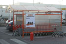
Mivel még mindig nem történt semmi, elmentünk máshová. Az OBI parkolójában láttuk ezt a remek mosópor-tárolót.
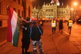
Este nyolc óra felé tértünk vissza a Kossuth térre. A hírek szerint közben megérkezett a rendõri erõsítés, hoztak vízágyút, gázgránát-vetõt és lovakat is.

Tüntetõ kutya
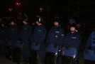
Valamelyest javult a felszerelés-ellátás. Ám milyen érdekes: az egész kordonból egyetlenegy rendõrnek volt jelvénye. Neki pont nem esett le?
A tüntetõk pénzt dobáltak a rendõröknek a kordon mögé, és szidalmazták õket. Valaki banánt is bedobott nekik.
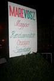
Ilyen is van már
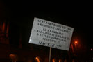
A számítógépek és a nyomtatók elterjedésének következménye: egyre több Times New Roman a tüntetéseken
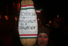
A söprû egyre népszerûbb motívum

Kossuth tér, este 9 óra körül. Se többen, se kevesebben nem lettünk.
Na, ezt tessék lenácizni. Hunyadi Mátyás király zászlaja.

A webszakmai konzultációt Blogadmin heves integetése szakította félbe, aki rövid iramodás után e fiatalemberhez vezetett, akit már jó tucatnyian próbáltak rávenni, távozzon a térrõl szépszerével, amíg teheti.

A fiatalember ugyanis román volt, ami még nem is lenne baj, de meg akarta dobni egy üveggel a rendõröket. Be is volt baszva, mint a disznó, és nem is nagyon értette az emberi beszédet. Figyeljük meg a képen mellette látható úriember arckifejezését: õ éppen haragszik rá.
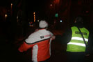
Kicsit nehezen értette, hogy húzzon a faszba. Elõször megmutattam neki az igazolványtokomban lapuló rendõrjelvényt, hátha észbe kap, de csak még jobban lefagyott, és mindenáron vissza akart furakodni a tömegbe. Végül segítettünk neki távozni, de még ezt se értette.

... ugyanis a sarokról minduntalan visszafordult, pedig már rohadt nagy pofonok lebegtek körülötte. Megjegyzem, délelõtt is láttam õt, akkor is hasonló okból kellett kizavarni a térrõl.

Végül sikerült elterelgetni egy mellékutcába, de már sunnyogott is a sarok felé, hogy a háztömböt megkerülve visszaosonjon. Mondtuk neki, hogy ha megpróbálja, átadjuk a rendõröknek.
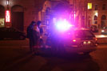
Ennek ellenére megpróbálta. Pár srác odament erre a rendõrautóhoz, és szólt a fakabátoknak, hogy itt van egy rendbontó, dobálni akart. A rendõrök viszont nem akartak vele foglalkozni, mondták, hogy majd másfelé néznek, intézzük el mi.

Nagy nehezen megértettük vele, hogy iszony nagy ruha következik, ha nem pucol, megmutattuk neki egy-két srác vasalt bakancsát, egy pár bevetési kesztyût, és ismertettük vele a tényt, hogy kábé harmincan vagyunk rá. Erre nagy nehezen végre eloldalgott, de mivel kissé akadozva tette, kicsit helybentrappoltunk neki. Erre azt hitte, hogy üldözzük, és hanyatt-homlok elmenekült. Jól tette.
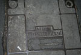
A nagy üldözés közben találtuk ezt az õsöreg csatornafedelet. Magy. Kir. Távbeszélõ-hálózat, állt rajta valamikor. Elképzelem, ahogy valamikor a negyvenes években egy büszke proletár nekiállt lelkiismeretesen kiflexelni belõle a "kir." szótagot.